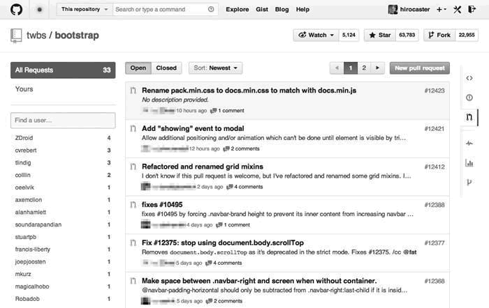
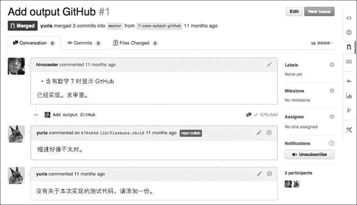
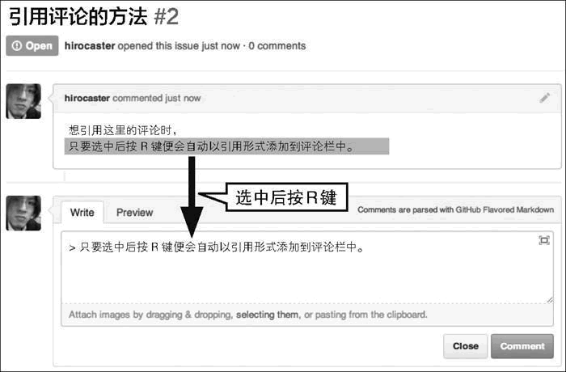
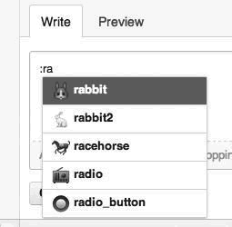
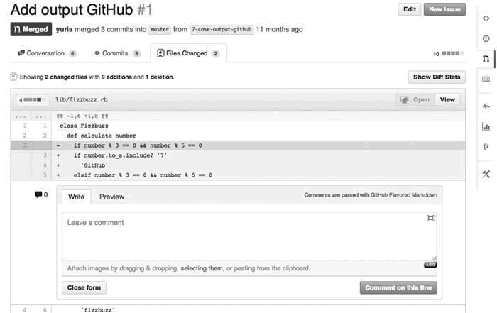

首页 > 编程笔记
GitHub Pull Request功能详解
Pull Request 是用户修改代码后向对方仓库发送采纳请求的功能，也是 GitHub 的核心功能（图 1）。正因为有了这个功能，才会让众多开发者轻松地加入到开源开发的队伍中来。
在 Pull Request 页面能够列表查看当前处于 Open 状态的 Pull Request。通过点击页面左部和上部的选项可以进行筛选和重新排列。
在列表中点击特定的 Pull Request 就会进入详细页面（图 2）。页面上方显示着这次是从谁的哪个分支向谁的哪个分支发送了 Pull Request。下面，我们对各个标签（Tag）页进行讲解。
举个例子，假设 Pull Request 的 URL 如下所示。
提交日志的右侧有该提交的哈希值，点击链接即可确认相应提交的详细信息。
这样一来就可以轻松便捷地引用评论了。该快捷键在 Issue 中同样有效。

图 4 Pull Request 的提交
在评论中输入“：”（冒号）便会启动表情自动补全功能。只要输入几个与该表情相关的字母，系统就会为您筛选自动补全的对象（图 5）。选择想要的表情，其相应代码（前后都有冒号的字符串）便会插入到文本框中。
准确表达感情可以让交流变得和谐，各位请记得多加利用。
默认情况下系统会将空格的不同也高亮显示，所以在空格有改动的情况下会难以阅读。这时只要在 URL 的末尾添加“?w=1”就可以不显示空格的差别。
将鼠标指针放到被更改行行号的左侧，我们会看到一个加号。点击这个加号可以在代码中插入评论（图 6）。这样，评论是针对哪行代码的就一目了然了。
这个插入评论的功能让针对代码的讨论变得十分顺畅。特别是在多人协作的软件开发中，这个功能更加不可或缺。

图 1 Pull Request
图 1 Pull Request
在 Pull Request 页面能够列表查看当前处于 Open 状态的 Pull Request。通过点击页面左部和上部的选项可以进行筛选和重新排列。
在列表中点击特定的 Pull Request 就会进入详细页面（图 2）。页面上方显示着这次是从谁的哪个分支向谁的哪个分支发送了 Pull Request。下面，我们对各个标签（Tag）页进行讲解。

图 2 Pull Request 的详细页面
图 2 Pull Request 的详细页面
获取diff格式与patch格式的文件
对长期投身于软件开发的人来说，有时可能会希望以 diff 格式文件和 patch 格式文件的形式来处理 Pull Request。举个例子，假设 Pull Request 的 URL 如下所示。
https://github.com/用户名/仓库名/pull/28
如果想获取 diff 格式的文件，只要像下面这样在 URL 末尾添加 .diff 即可。https://github.com/用户名/仓库名/pull/28.diff
同理，想要 patch 格式的文件，只需要在 URL 末尾添加 .patch 即可。https://github.com/用户名/仓库名/pull/28.patch
想要 diff 格式与 patch 格式文件的各位请按照上述方法进行操作。Conversation标签
在 Conversation 标签页中，可以查看与当前 Pull Request 相关的所有评论以及提交的历史记录。人们在这里添加评论互相探讨，发送提交落实讨论内容的整个过程会按时间顺序列出，供用户查看。各位在查看过程中如果有自己的想法，不妨积极地添加评论参与探讨。提交日志的右侧有该提交的哈希值，点击链接即可确认相应提交的详细信息。
引用评论
在 Conversation 中人们通过添加评论进行对话。这里有一个简单方法可以帮您引用某个人的评论。选中想引用的评论然后按 R 键，被选择的部分就会自动以评论语法写入评论文本框（图 3）。

图 3 按 R 键引用选中的部分
图 3 按 R 键引用选中的部分
这样一来就可以轻松便捷地引用评论了。该快捷键在 Issue 中同样有效。
Commits标签
在 Commits 标签页中，按时间顺序列表显示了与当前 Pull Request 相关的提交（图 4）。标签上的数字为提交的次数。每个提交右侧的哈希值可以连接到该提交的代码。图 4 Pull Request 的提交
在评论中应用表情
GitHub 的文化中有使用表情的习惯。表情种类繁多，要一次全记下来十分困难。这时我们可以利用表情的自动补全功能。在评论中输入“：”（冒号）便会启动表情自动补全功能。只要输入几个与该表情相关的字母，系统就会为您筛选自动补全的对象（图 5）。选择想要的表情，其相应代码（前后都有冒号的字符串）便会插入到文本框中。

图 5 自动补全以“ra”开头的表情
图 5 自动补全以“ra”开头的表情
准确表达感情可以让交流变得和谐，各位请记得多加利用。
Files Changed标签
Files Changed 标签页中可以查看当前 Pull Request 更改的文件内容以及前后差别。标签上的数字表示新建及被更改的文件数。默认情况下系统会将空格的不同也高亮显示，所以在空格有改动的情况下会难以阅读。这时只要在 URL 的末尾添加“?w=1”就可以不显示空格的差别。
将鼠标指针放到被更改行行号的左侧，我们会看到一个加号。点击这个加号可以在代码中插入评论（图 6）。这样，评论是针对哪行代码的就一目了然了。

图 6 对所选内容进行评论
这个插入评论的功能让针对代码的讨论变得十分顺畅。特别是在多人协作的软件开发中，这个功能更加不可或缺。
关注公众号「站长严长生」，在手机上阅读所有教程，随时随地都能学习。内含一款搜索神器，免费下载全网书籍和视频。

微信扫码关注公众号